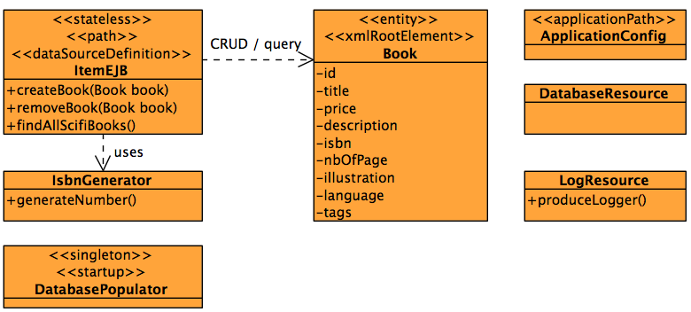

The purpose of this sample is to show you how to test an EJB in several ways :

Being Maven centric, you can compile and package it with mvn clean compile, mvn clean
package or mvn clean install. The package and install phase will
automatically trigger the unit tests. Once you have your war file, you can deploy it.
This sample has been tested with GlassFish 3.1.2 in several modes :
asadmin start-domain) and once the application is packaged
deploy it (using the admin console or the command line asadmin deploy
target/sampleArquilianWytiwyr.war)
mvn clean package embedded-glassfish:runOnce deployed you can call the ItemEJB REST service and see all the books in the database. You can also run some curl commands :
curl -X GET http://localhost:8080/sampleArquilianWytiwyr/rs/itemscurl -X GET -H "accept: application/json" http://localhost:8080/sampleArquilianWytiwyr/rs/items
The purpose of this sample is to execute unit and integration tests. So to execute it you can run :
mvn test : this will execute the unit test ItemEJBTest which uses Mockitomvn integration-test : this will execute both integration tests
ItemEJBWithArquillianIT and ItemEJBWithoutArquillianIT